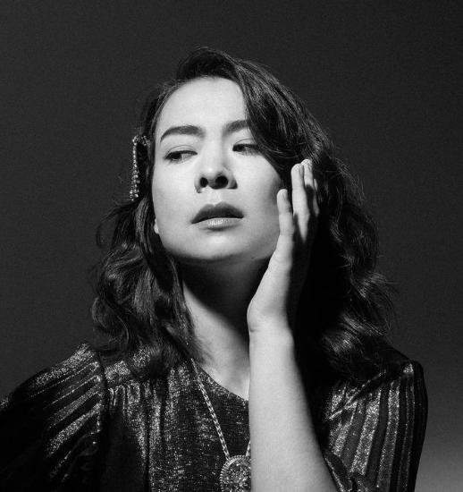

Biography
Mitski Miyawaki, known professionally as Mitski, born Mitsuki Laycock, was born on September 27, 1990 in the Mie prefecture of Japan. Before settling in the United States, Mitski lived in thirteen countries, including (but not limited to) China, Malaysia, Turkey, and the Democratic Republic of Congo. She refers to herself as "half Japanese, half American but not fully either." While attending Purchase College's Conservatory of Music to study studio composition, Mitski self-released her first two albums, Lush (2012) and Retired from Sad, New Career in Business (2013). Her senior project at Purchase originally involved the creation of these albums. Bury Me at Makeout Creek, her third studio album, was made available in 2014 via Double Double Whammy after she graduated. Her critically acclaimed albums Puberty 2 (2016), Be the Cowboy (2018), and Laurel Hell (2022), the latter of which reached the top ten in multiple countries, were then published when she signed with Dead Oceans in 2015. She was named the "best young songwriter" in America by The Guardian.
Before graduating from SUNY Purchase in 2013, Miyawaki released her first two albums using the school’s resources, including a 60-piece student orchestra featured on her second project. Lush (2012) and Retired from Sad, New Career in Business (2013) were released in Mitski’s junior and senior years as end of term projects. Both albums were self-released by Mitski herself via Bandcamp.
Quotes
I don't think I'm alone in this: I'm obsessed with trying to not only be happy but maintain happiness, but my definition of happiness is skewed more towards ecstasy rather than contentment.
| Tour date | Event venue | Stage | Special guest |
|---|---|---|---|
| Jan 26, 2024 | Miami Beach, FL | The Jackie Gleason Theater | Tamino |
| Jan 27, 2024 | Miami Beach, FL | The Jackie Gleason Theater | Tamino |
| Jan 29, 2024 | Orlando, FL | Dr. Philipps Center for the Performing Arts | Tamino |
| Jan 30, 2024 | Durham, NC | Durham Performing Arts Center | Tamino |
| Feb 2, 2024 | Durham, NC | Durham Performing Arts Center | Tamino |
| Feb 3, 2024 | Durham, NC | Durham Performing Arts Center | Tamino |
| Feb 6, 2024 | Philadelphia, PA | The Met | Tamino |
| Feb 7, 2024 | Philadelphia, PA | The Met | Tamino |
| Feb 10, 2024 | Toronto, ON | Massey Hall | Tamino |
| Feb 11, 2024 | Toronto, ON | Massey Hall | Tamino |
| Feb 12, 2024 | Toronto, ON | Massey Hall | Tamino |
| Feb 15, 2024 | Boston, MA | MGM Music Hall at Fenway | Tamino |
| Feb 16, 2024 | Boston, MA | MGM Music Hall at Fenway | Tamino |
| Feb 17, 2024 | Boston, MA | MGM Music Hall at Fenway | Tamino |
| Feb 18, 2024 | Boston, MA | MGM Music Hall at Fenway | Tamino |
| Feb 21, 2024 | New York, NY | Beacon Theatre | Tamino |
| Feb 22, 2024 | New York, NY | MGM Music Hall at Fenway | Tamino |
| Feb 22, 2024 | New York, NY | MGM Music Hall at Fenway | Tamino |